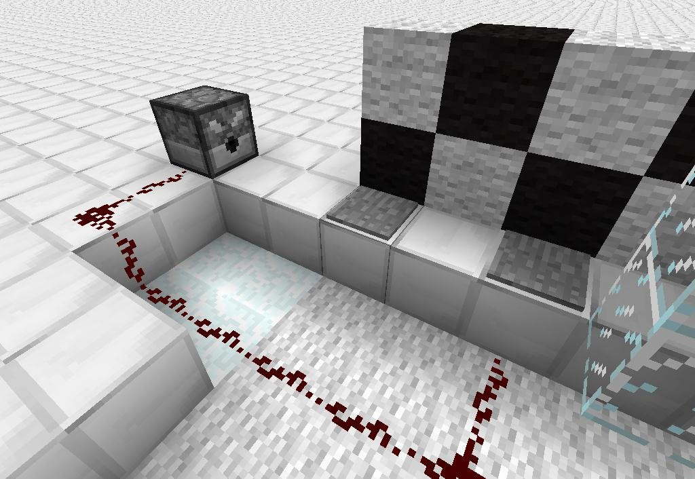
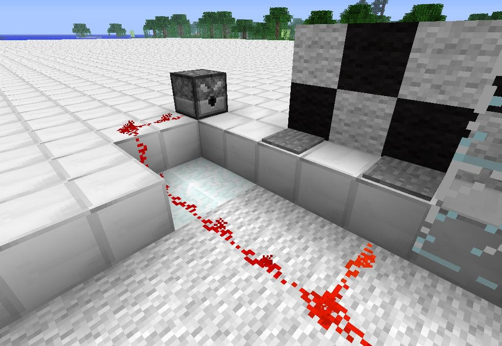

Automated Redstone Game
How to Make Automated Redstone MiniGames in Minecraft
Implementing Game Mechanics
This is probably the hardest and most complex step. This may require many hours of fine tuning if you let things get out
of hand.
The first obstacle you encounter in my redstone game is a lava pit that appears and disappears. I made this using sticky pistons
that run off of a redstone clock as seen below. The player has to time their running carefully or risk falling into the lava
pit. I've lined the obstacle course with walls of wool to keep players locked in death run.
(1) Players run across the extended pistons as seen from this birds eye view. , (2) The pistons retract at different timings I set in their corresponding redstone clocks.
My first obstacle is powered by redstone clocks.
Redstone clocks are fairly simple. They are made from four redstone repeaters in a circuit. Each repeater can be set to a different
timing by right clicking them. As the current goes around the clock, it moves from repeater to repeater based on the timing each
is set to. The redstone pulse that results from these clocks powers my piston obstacle at different timings. You can view the
redstone clock arrangement below.
The second obstacle I used are a set of pressure plates that run along the course that are attached to dispensers filled with arrows. These dispensers hit the player with arrows if they step on the wrong pressure plates. I also included some false pressure plates to try and fool the player.
 (1) Here are two pressure plates that are not activated. , (2) As you can see here the pressure plate on the left is false, while the one on the right is real.
Pressure plates and pistons can get boring. Having them alone would make my course too easy and so in order to add some variety to the experience, I added a second arrow-filled dispenser and piston obstacle that are powered by a memory array. As stated earlier, the memory array works on the same principles as the sheet music used in the programmable piano. Implementing a memory array gives some of my obstacles a less predictable path.
« Previous Next »